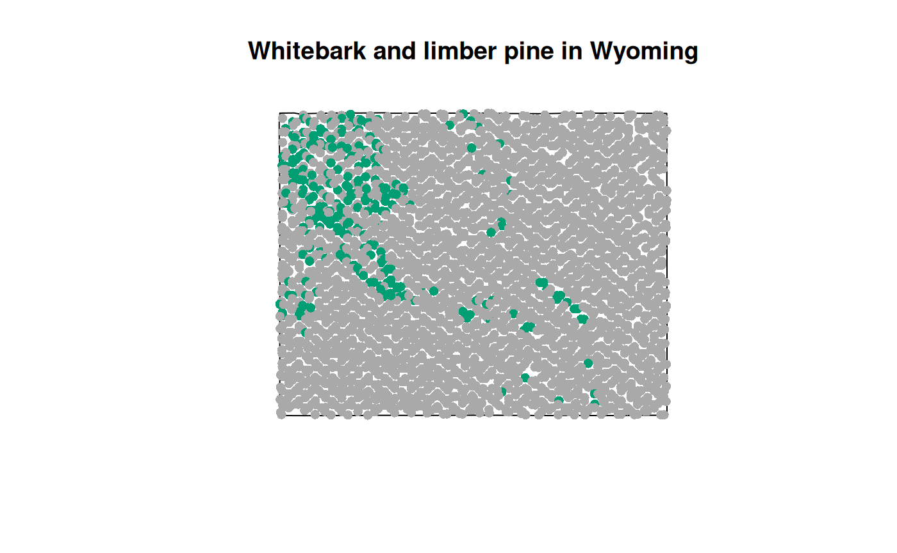

FIA plots - species distribution map
Source:vignettes/articles/FIESTA_FIAplots_species_distribution.Rmd
FIESTA_FIAplots_species_distribution.RmdThe FIESTA R package is an estimation engine that generates estimates using FIA data for custom situations (Frescino et al. 2023). The package provides functions for using FIA’s standard estimation techniques and also includes different modules for using alternative estimation strategies for unique situations (Frescino et al. 2022). The package facilitates compilation of FIA and geospatial auxiliary information needed for estimation and provides consistent output for reporting.
To use the FIESTA R package, you need to be familiar with the R statistical software and also have a firm knowledge of the FIA database. Please consult the FIA database description user guide (Version 9.0.1) for variable descriptions (Burrill et al. 2021).
The following examples demonstrate how we use FIESTA for compiling plot-level summaries.
Setup
First install the necessary packages and define outfolders.
Next we can specify a few parameters:
We can look at the resulting filter and use the internal
ref_species table to decide on a name for the column in the
output data frame.
tfilter## [1] "SPCD %in% c(101, 113)"
ref <- ref_species[ref_species$SPCD %in% spcd, ]
ref## SPCD COMMON_NAME GENUS SPECIES VARIETY SUBSPECIES SPECIES_SYMBOL
## 1595 113 limber pine Pinus flexilis <NA> <NA> PIFL2
## 2029 101 whitebark pine Pinus albicaulis <NA> <NA> PIAL
## E_SPGRPCD W_SPGRPCD C_SPGRPCD P_SPGRPCD WOODLAND SFTWD_HRDWD MAJOR_SPGRPCD
## 1595 9 24 NA NA N S 1
## 2029 9 24 NA NA N S 1
## JENKINS_TOTAL_B1 JENKINS_TOTAL_B2 DRYWT_TO_GREENWT_CONVERSION
## 1595 -2.5356 2.4349 1.822335
## 2029 -2.5356 2.4349 1.751189
## CARBON_RATIO_LIVE MODIFIED_DATE SCIENTIFIC_NAME
## 1595 0.480 2023-05-25 Pinus flexilis
## 2029 0.478 2023-05-25 Pinus albicaulis
spcd_name <- "whitebark_limber"Finally we create a spatial points data frame using the internal Wyoming plot data
WYpltsp <- spMakeSpatialPoints(xyplt = WYplt,
xy.uniqueid = "CN",
xvar = "LON_PUBLIC",
yvar = "LAT_PUBLIC")Summarize Plots
Finally we can put all of the pieces together to get plot level species presence/absence:
pltdomdat <- datSumTreeDom(plt = WYpltsp,
tree = WYtree,
seed = WYseed,
bycond = FALSE,
tsumvar = "TPA_UNADJ",
tfilter = tfilter,
tdomtot = TRUE,
tdomtotnm = spcd_name,
seedlings = "Y",
presence = TRUE,
FIAname = TRUE,
datSum_opts = list(keepall = TRUE))
tdomdat.pres <- pltdomdat$tdomdat.pres
head(tdomdat.pres)## Simple feature collection with 6 features and 22 fields
## Geometry type: POINT
## Dimension: XY
## Bounding box: xmin: -106.0363 ymin: 42.26546 xmax: -105.6679 ymax: 42.41013
## Geodetic CRS: NAD83
## CN INVYR STATECD CYCLE UNITCD COUNTYCD PLOT MEASYEAR RDDISTCD
## 1 40404728010690 2013 56 3 2 1 86688 2013 NA
## 2 40404729010690 2011 56 3 2 1 84596 2011 1
## 3 40404730010690 2013 56 3 2 1 88993 2013 6
## 4 40404731010690 2012 56 3 2 1 82340 2012 NA
## 5 40404733010690 2012 56 3 2 1 82869 2012 NA
## 6 40404734010690 2013 56 3 2 1 83304 2013 NA
## NF_SAMPLING_STATUS_CD PLOT_STATUS_CD NF_PLOT_STATUS_CD NBRCND NBRCNDSAMP
## 1 0 2 NA 1 1
## 2 0 1 NA 1 1
## 3 0 1 NA 1 1
## 4 0 2 NA 1 1
## 5 0 2 NA 1 1
## 6 0 2 NA 1 1
## NBRCNDFOR CCLIVEPLT FORNONSAMP PLOT_ID SPCD whitebark pine
## 1 0 0 Sampled-Nonforest ID560200186688 NA 0
## 2 1 17 Sampled-Forest ID560200184596 113 0
## 3 1 41 Sampled-Forest ID560200188993 113 0
## 4 0 0 Sampled-Nonforest ID560200182340 NA 0
## 5 0 0 Sampled-Nonforest ID560200182869 NA 0
## 6 0 0 Sampled-Nonforest ID560200183304 NA 0
## limber pine whitebark_limber geometry
## 1 0 0 POINT (-105.9625 42.41013)
## 2 1 1 POINT (-105.7277 42.40928)
## 3 1 1 POINT (-105.6679 42.40953)
## 4 0 0 POINT (-106.0313 42.35599)
## 5 0 0 POINT (-105.8509 42.31655)
## 6 0 0 POINT (-106.0363 42.26546)And we can plot the results to get a picture of the whitebark_limber presence/absence distribution.
cols <- c("0" = "lightgrey", "1" = "#009E73")
point_cols <- cols[as.character(tdomdat.pres$whitebark_limber)]
plot(tdomdat.pres[ ,"whitebark_limber"], col = point_cols, pch = 16)